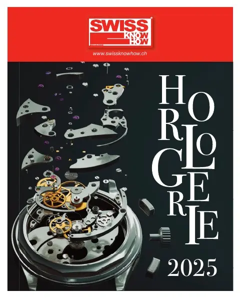
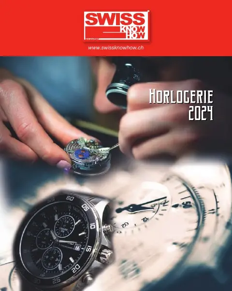
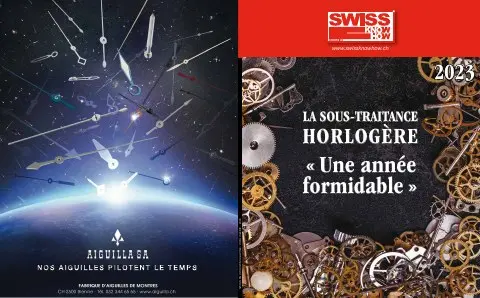
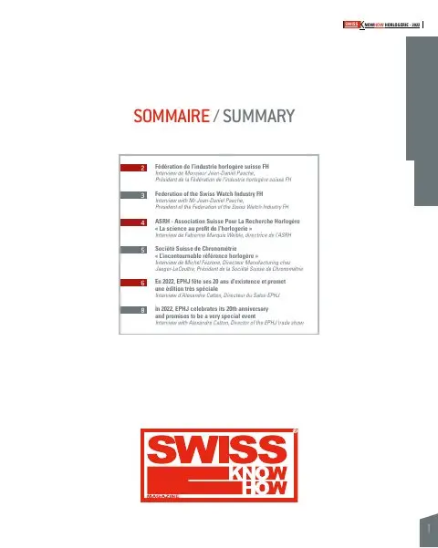
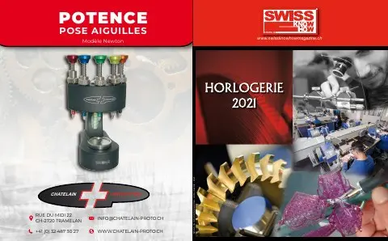
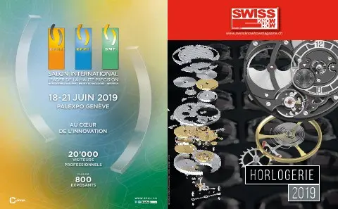
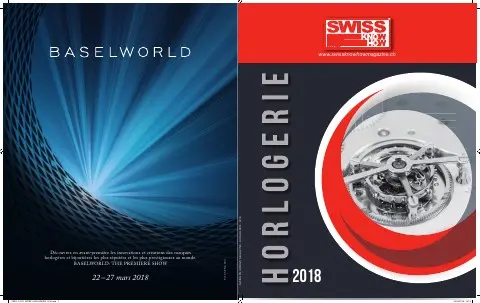

Présentation
Sous-traitant jurassien fort de 20 ans d'expérience en décolletage, 30 collaborateurs et 50 000 composants usinés par jour. Engagée dans l'industrie 4.0 avec un suivi de production en temps réel, l'entreprise a ajouté en 2020 une activité de fraisage 5 axes et propose cliquets à bille, barrettes à ressort et terminaison Black Titanium.
Photos
Articles
Annonce

Annonce Cyberis – Barrettes haut de gamme
Publireportage
Cyberis – Le spécialiste de la visserie haut de gamme
Décolletage jurassien et industrie 4.0
Publireportage


Cyberis SA – Un précieux partenaire
Décolletage de précision et réactivité à Bassecourt
Publireportage
Cyberis SA – La réactivité comme carte de visite
Décolletage de précision à Bassecourt
Parutions
- Swiss Knowhow – Horlogerie 20252025 · page 18PDF

- Swiss Knowhow – Horlogerie 20242024 · page 9, 12PDF

- Swiss Knowhow – Horlogerie 2023 : la sous-traitance horlogère2023 · page 16PDF

- Swiss Knowhow – Horlogerie 20222022 · page 17PDF

- Swiss Knowhow – Horlogerie 20212021 · page 14PDF

- Swiss Knowhow – Horlogerie 20192019 · page 40PDF

- Swiss Knowhow – Horlogerie 20182018 · page 39PDF
